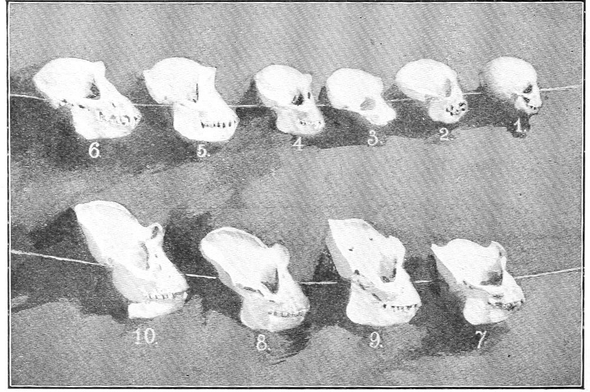

The Gorilla—His Habitat—Skeleton—Skull—Color—Structural Peculiarities
In the order of nature the gorilla occupies the second place below man. His habitat is the lowlands of tropical West Africa, and it is confined to very narrow limits. The vague lines which bound his realm cannot be defined with absolute precision, but those generally given in books that treat of him are not correct. If he ever occupied any part of the coast north of the equator, he has long since become extinct in that part; but there is nothing to show that he ever did exist there. So far as I have been able to trace the lines that define the extent of his native haunts, they appear to confine him to the low delta country lying between the equator and the Loango valley along the coast, and reaching eastward to the interior—an average distance of less than one hundred miles. The eastern boundary is very irregular. The extreme limit on the north side is about the Gaboon River, eastward to the foothills of the Crystal Mountains; thence southward to the Ogowé River to the vicinity of the mouth of the Nguni; thence up that river twenty or thirty miles; thence by a zigzag line along the western base of the dividing lands between the Congo basin and the Atlantic watershed, to the head-waters of the Chi Loango River, and with that valley to the coast. Beyond these lines I have found no reliable trace of him, and along this boundary only now and then is he found, except along the coast.
I have seen two adult skulls and two infant skulls of the gorilla that were brought by Mr. Wm. S. Cherry from the Kisanga valley, which lies on the north side of the middle Congo, into which the Kisanga River flows. The skulls are the only evidence I have found of this ape existing so far eastward; but they were said to have come from that part of the valley lying directly under the equator. Mr. Cherry himself did not collect them. He secured them from natives, and he does not claim to have seen any of those apes alive.
There appear to be three centers of gorilla population. The first is in the basin of Izanga Lake; the second is on the south side of the basin of Lake Nkami; and the third is in the basin of the lake east of Sette Kama and west of the Nkami River. The gorilla is rarely, if ever, found in high or hilly districts. He appears to be restricted to the hummock lands, which are elevated only a few feet above tide-level. This is all the more singular from the fact that the ape appears to have a morbid dislike for water, and it is doubtful whether or not he can swim. It is true that he has one peculiar characteristic that belongs to aquatic animals. He has a kind of web between the digits; but its purpose cannot be to aid in swimming. I have been told that the gorilla can swim, and the statement may be true; but I have never observed anything in his habits to confirm this, and I have noted many facts that controvert it.
I know of no valid reason why he should be confined to the limits mentioned, unless it be on account of climatic conditions which are peculiar to this district. South of it the climate along the coast is much cooler. The country east of it is hilly and comparatively barren. North of the equator is a land of almost perpetual rain. Within this district dry and rainy seasons are more equally divided and more uniform in temperature.
The gorilla appears to be an indigenous product which does not bear transplanting. He thrives only in a low, hot, and humid region, infested by malaria, miasma, and fevers. It is doubtful if he can long survive in a pure atmosphere. The only specimen that I have ever heard of north of the equator was one on the south side of the Komo River, which is the north branch of the Gaboon. The point at which I heard of his being was within a few miles of the equator. I also heard of five having been seen a few miles southwest from Njole, which is located on the equator on the north bank of the Ogowé, a little way east of the Nguni. They were said to be the first and only ones ever seen in that region within the memory of man. As to their being found between Gaboon and Cameroon, I find no trace along the coast of one ever having been seen in that part.
Certain writers have mentioned the fact that, in 1851 and 1852, gorillas came in great numbers from the interior to the coast. The fact is that then the gorilla was practically unknown to science. He had been reported by Ford, Savage, and others, but prior to that time there are no data to show whether or not they were more numerous in the years mentioned. There had never been a specimen brought to civilization. It was about that time that Dr. Ford sent a skeleton to America, and one had been previously sent to England. Some years earlier Dr. Savage had announced the existence of such a creature and had sent sketches of a skull, but it was more than ten years after the period in question that Paul du Chaillu brought out the first skins of gorillas and gave detailed accounts of their character, habits, and geographical distribution. From these facts it is not rash to conclude that the migrations of 1851 and 1852 are mere matters of fancy.
Gorillas are found in the Ogowé delta, about one degree south latitude; but not one has ever been known to come from the Crystal Mountains. At the time above mentioned neither traders nor missionaries had ascended the Gaboon River above Parrot Island (which is less than twenty miles from the mouth), except to make a flying trip by canoe. Nothing was known of those parts except what was learned from the natives, and that was very little. During my first voyage I went up the river as far as Nenge Nenge, about seventy-five miles from the coast. At that place I spent two days with a white trader, who had been stationed there for a year. I was assured by him that there were no gorillas in that section. The natives report that they have been found in the lowlands south of there, in the direction of the Ogowé basin; but their reports are conflicting, and none of them, so far as I could learn, claims that they are found north of there, nor in the mountains eastward. I admit that they may have been found in, and may yet inhabit, the strip of land between the Gaboon and the Ogowé; but I repeat that there is no tangible proof that they were ever found north of the Gaboon. With due respect to Sir Richard Owen and other writers who have never been in that country, I insist that they are mistaken. It is true that one of the tribes living north of the Gaboon has a name for this animal; but it does not follow that the ape lives in that country. The Orungu tribe has a name for lion, but there is not such a beast within two hundred miles of their country. Not one of that tribe ever saw a lion.
A number of specimens of gorillas have been secured at Gaboon, but they have been brought there from far away. It is the chief town of the colony, and there are more white men there than elsewhere to buy them. It is not possible for a stranger to ascertain what part of the country a specimen is brought from. The native hunter will not tell the truth, lest some one else should find the game and thus deprive him of its capture and sale. I saw a specimen at Cameroon, and was told it had been captured in that valley, fifty miles from the coast; but I hunted up its history and found with absolute certainty that it was captured near Mayumba, two hundred miles south of Gaboon.
Even with the greatest care in hunting up the history of a specimen, one may fail, and often does fail, in tracing it to its true source; but every one, so far, that I have followed up has been brought from somewhere within the limits I have laid down. Contrary to the statement of some authorities that these apes “have never been seen on the coast since 1852,” I assert that by far the greatest number of them are found near the coast. I do not mean to say that they sit on the sand along the beach, or bathe in the surf, but they live in the jungle of the low coast belt. Along the lower Congo the gorilla is known only by name, and scores of the natives do not know even that. The nearest point to that river that I have been able to locate the gorilla as a native is in the territory about sixty or seventy miles northwest of Stanley Pool.
I am much indebted to the late Carl Steckelman, who was an old resident of the coast, a good explorer, a careful observer, and an extensive traveler. He was drowned at Mayumba in my presence in October, 1895. I knew him well and secured from him much information concerning the gorilla. On a map he traced out for me what he believed to be the south and southeast limits of the gorilla’s habitat. Not thirty minutes before the accident in which he lost his life I had closed arrangements with him to make an expedition from Mayumba to the Congo, near Stanley Pool, by one route and return by another, but his death prevented the fulfillment of this plan.
Dr. Wilson, who was the first missionary at Gaboon, located there in 1842. About six years after that time he wrote a lexicon of the native language. In this the name of the gorilla does not appear at all. If the ape had been so very common, it is not probable that his name would have been omitted from this lexicon. Eight years later Dr. Walker, in a revision of the book, gave the definition, “a monkey larger than a man.” But he had never seen a specimen of the ape, except the skulls and a skeleton which had been brought from other parts. It is true that at Gaboon Dr. Savage first learned about the gorilla and there secured a skull. From this he made drawings, on which account his name was attached to that of the animal in natural history. It was still a few years later that Dr. Ford sent the first skeleton to America, and Captain Harris sent the first to England. The former skeleton is in the Museum of Zoölogy at Philadelphia. Both of these specimens may have come from any place a hundred miles away from Gaboon.
It is possible that at this early date the gorilla may have occupied the peninsula south of the Gaboon River in greater numbers than he has since done, because up to that time there had been no demand for specimens. If this was true at that time, it is not so now; and if he is not extinct in that part, he is so rare as to make it doubtful whether or not he is found there at all as a native. In four journeys along the Ogowé River and the lakes of that valley I made careful inquiries at many of the towns, and the natives always assured me that the gorillas lived on the south side of that river. I spent five days at the village of Moiro, which is located on the north side of the river and about fifty miles from the coast. There I was told by the native woodsmen that no gorillas lived on the north side of the river, but that there were plenty of them along the lakes south of the river. They said that in the forest back of their town were plenty of chimpanzees, and that they were sometimes mistaken for gorillas, but there were absolutely none of the latter in that part.
In view of these and countless other facts I deem it safe to say that few or no gorillas can be found at any point north of the Ogowé River; and I doubt if the specimen heard of on the Komo was a genuine gorilla. The natives sometimes claim to have something of the kind for sale, in order to get a bonus from some trader, when in truth they may not have anything of the kind. The only point north of the Ogowé at which I have had any reason to believe a gorilla was ever found was in the neighborhood of a small lake called Inenga. This lake is nearly due west from the mouth of the Nguni River and something more than a hundred miles from the coast. Certain reports along that part appeared to have a flavor of truth; but there was no evidence except the statement of the natives.
In the lake region south of the river they are fairly abundant as far south as the head-waters of the Rembo, Nkami, and through the low country of the Esyira tribe; but they are very rare in the remote forests and unknown in the highlands and plains of that country. South of the Chi Loango they are quite unknown, and south of the Congo they are never heard of.
There are no possible means of estimating their number; but they are not so numerous as has been supposed, and from the reckless slaughter carried on by the natives in order to secure specimens for white men, they may ultimately become extinct. Up to this time their ferocity alone has saved them from such a fate. But the use of improved arms will soon overcome that barrier.
The skeleton of the gorilla is so nearly the same as that of the chimpanzee—which has elsewhere been compared to the human skeleton—that we shall not review the comparison at length; but we must note one marked feature in the external form of the skull, which differs alike from other apes and from man.
The skull of the young gorilla is much like that of the chimpanzee and remains so until it approaches the adult state. At this period the ridge above the eyes becomes more prominent, and at the same time a sharp, bony ridge begins to develop along the temples and continues around the back of the head on that part of the skull called the occiput. At this point it is intersected by another ridge at right angles to it. This is called the sagittal ridge. It runs along the top of the head towards the face; but on the forehead it flattens nearly to the level of the skull and divides into two very low ridges, which turn off to a point above the eyes and merge into that ridge. These form a continuous part of the skull and are not joined to it by sutures. The mesial crest in a very old specimen rises to the height of nearly two inches above the surface of the skull, and imparts to it a fierce and savage aspect; but in the living animal the crests are not seen, as the depressions between them are filled with large muscles, which make the head look very much larger than it otherwise would. These crests affect only the exterior of the skull and do not appear to alter the form or size of the brain cavity, which is slightly larger in proportion than that of the chimpanzee. These crests are peculiar to the male gorilla. The female skull shows no trace of them.
There is at least one case in which the male gorilla has failed to develop this crest. In the series of skulls found in the cuts given herewith, No. 6 is that of an adult male gorilla. I know it to be such, for I dissected the animal and prepared the skeleton for preservation. He was killed in the basin of Lake Ferran Vaz, not more than three or four hours’ walk from my cage, and his body was at once brought to me. A good idea of his size can be obtained by reference to another cut given herewith. This cut is copied from a photograph taken by me. It shows some natives in the act of skinning the gorilla.
SKULLS OF GORILLAS—FRONT VIEW
(From a Photograph in Buffalo Museum.)

SKULLS OF GORILLAS—PROFILE VIEW
(From a Photograph in Buffalo Museum.)
In this picture the gorilla is sitting flat on the sand; his body is limp and is somewhat shorter than it was in life. Yet it can be seen that the top of his head is higher than the hip of the man who is holding him. In the foreground, on the left of the gorilla, sits the man who killed him. He is sitting on a log and is thereby a little more elevated than the gorilla. It did not occur to me to place them side by side in order to make a comparison. As he sits, the body and head of this gorilla measure nearly four feet from the base of the spinal column to the top of the head. I had no means of weighing him, but made an estimate by lifting him. I estimate that he weighed at least two hundred and forty pounds. He was not an old specimen, but comparing the skull with No. 7, in which the crests are well developed, it is found to be larger, and other things point to the conclusion that he was older than No. 7.
I am aware that one specimen does not of itself establish anything, but in this case it shows that the male gorilla does not always develop the crest. The head of this specimen was surmounted by the red crown which I have elsewhere described. No. 1, which is the skull of my pet, Othello, had the same mark. He was captured near the place where No. 6 was killed.
No. 2 is the skull of a female nearly four years old. She had the same mark. She was also captured in the same basin, but on the opposite side of the lake. The facial bones of No. 6 show that he had received a severe blow early in life; but the fragments had knit together, and the effect could not be seen in the face of the ape while alive.
No. 8 is the skull of a large male from Lake Izanga, which is on the south side of the Ogowé River, more than a hundred miles from the coast. This is one of the three centers of population mentioned. I do not know the history of this specimen. It was presented to me by Mr. James Deemin, an English trader, with whom I traveled many days on the Ogowé River, and who extended to me many courtesies.
No. 5 is the skull of an adult female. By comparing it in profile with No. 6, it will be seen that they resemble each other closely, except that the muzzle of the latter projects a little more, and the curvature of the skull across the top is less; but the transverse distance is a little greater. Nos. 2, 3, 4, and 5 are females; the others are males.
NATIVES SKINNING A GORILLA
(From a Photograph.)
While this series is not complete in either sex, it is an excellent one for comparative study. I do not know whether or not the heads of those with the crests were the same color as No. 6, but the ntyii, which I have mentioned as possibly a new specimen of the gorilla, does not have this crown of red. His ears are also said to be larger than those of the gorilla, but smaller than the chimpanzee’s. He is reputed to grow to a larger size than either of them. The skin of the gorilla is a dull black or mummy color over the body; but over the face it is a jet black, quite smooth and soft. It looks almost like velvet.
One fact peculiar to this ape is that the palms of both the hands and the feet are perfectly black. In other animals these are usually lighter in color than the exposed parts. In most other apes, monkeys, baboons, and lemurs, as in all races of men, the palms are lighter than the backs of the hands and feet. The thumb of the gorilla is more perfect than that of the chimpanzee, yet it is smaller in proportion to the hand than in man. The hand is very large, but has more the shape of the hand of a woman than that of a man. The fingers taper in a graceful manner, but by reason of the web alluded to they appear much shorter than they really are. It is not really a web in the true sense, but the integument between the fingers is extended down almost to the second joint. The forward edge of this is concave when the fingers are spread. When the fingers are brought together the skin on the knuckles becomes wrinkled, and the web almost disappears. This is more readily noticed in the living animal than in the dead. The texture of the skin in the palms is coarsely granulated, and the palmar lines are indistinct. The great toe sets at an angle from the side of the foot, thus resembling a thumb. It has more prehension than the corresponding member of the hand. The foot is less flexible than the hand, but it has greater strength and prehension.
At this point I wish to draw attention to one important fact. The tendons of the foot, which open and close the digits, are imbedded in the palm in a deep layer of coarse, gristly matter, which forms a pad, as it were, under the soles of the foot and prevents it from bending. Therefore it is not possible for a gorilla to sleep on a perch. In this respect he resembles man more than the chimpanzee does, but it is quite certain that neither of them has the true arboreal habit. The gorilla is an expert climber, but he cannot sleep in a tree. In the hand the tendons which close the fingers are the same length as the line of the bones, and this permits him to open the fingers to a straight line, which the chimpanzee cannot do.
One other important point I desire to mention. The muscles in the leg of the gorilla will not permit the animal to stand or walk erect. The large muscle at the back of the leg is shorter than the line of the bones of the leg above and below the knee. When this muscle is brought to a tension, those bones form an angle of from 130° to 160°, or thereabouts. So long as the sum of two sides of a triangle is greater than the other side, a gorilla can never bring his leg into a straight line. In the infant state, while the muscles are elastic and the bones less rigid, the leg can be forced nearly straight. The habit of hanging by the arms and walking with them in a straight line develops the corresponding muscle in those members so that the bones can be brought in line and the limbs straightened.
The gorilla can stand upon his feet alone and walk a few steps in that position; but his motion is very awkward; his knees turn outward, forming an angle of 40° or 50° on either side of the mesial plane. He never attempts to walk in this position except at perfect leisure, and then he holds on to something with his hands.
YOUNG GORILLA WALKING
(From a Drawing.)
The leg of the gorilla from the knee to the ankle is almost the same in size. In the human leg there is what is called the “calf” of the leg, but in the apes this is very small. However, there is a tendency in the ape to develop that feature. In the human species the calf of the leg appears to belong to the higher types of men. As we descend from the highest races of mankind this characteristic decreases, and it almost disappears in the lowest savage. The pygmies and the bushmen have smaller calves than any other men. It is not to be inferred from this that apes would ever have this feature developed in them by their elevation to a higher plane. So long as they remain apes they will retain this characteristic, which is one of the distinctive features of their apehood. One thing which makes the calf appear smaller in the gorilla is the large size of the muscles about the ankle and the flexibility of that joint. Also the fact that the joint of the knee is larger in proportion to the leg makes it appear smaller than it really is. The corresponding parts of the arm are more like those of the human body.
In a sitting posture the gorilla rests his body upon the ischial bones and sits with his legs extended or crossed. The chimpanzee usually squats, resting the ischial bones upon his heels. He sometimes sits, but more frequently he squats. When in either of these attitudes both kinds usually fold their arms across their breasts.
The hair of the gorilla is irregular in growth. It is more dense than that of the chimpanzee, but less uniform in size and distribution. On the breast it is very sparse, while on the back it is dense and interspersed with long, coarse hairs. The hair on the arms is long and coarse. The ground color is black, but the extreme end of the hair is tipped with pale white. This is so even in early youth. With age the white encroaches, until in extreme age the animal becomes quite gray. The top of the head is covered with a growth of short hair. In certain specimens this crest is of a dark tan color. It looks almost like a wig. This mark seems to be peculiar to certain localities. It is uniform among those captured in the Ferran Vaz basin.
A white trader living on Ferran Vaz Lake claims to have seen a gorilla which was perfectly white. It was said to have been seen on a plain near the lake in company with three or four others. It was thought to be an albino. In my opinion it was only a very aged specimen turned gray. A few of them have been secured that were almost white. It is not, however, such a shade of white as would be found in an animal whose normal color is white. I cannot vouch for the color of this ape seen on the plain, but there must have been something peculiar in it to attract attention among the natives. They regarded it as something very extraordinary.
So far, only one species of this ape is known to science; but there are certain reasons to believe that two species exist. In the forest regions of Esyira the natives described to me another kind of ape, which they averred was a half-brother to the gorilla. They know the gorilla by the native name njina, and the other type by the name ntyii. They do not confuse this with the native name ntyigo, which is the name of the chimpanzee. Neither is it a local name for the kulu-kamba. All of those apes are known to the natives. They described in detail, and quite correctly, the three known kinds of ape. In addition they gave me a minute account of the appearance and habits of a fourth kind, which I believe to be another species of the gorilla. They claim that he is more intelligent and human-like than any one of the others. They say that his superior wisdom makes him more alert and, therefore, more difficult to find. He is said always to live in parts of the forest more remote from human habitation. On my next voyage I mean to hunt for this new species.
The dental formula of the gorilla is the same as that of man; but the teeth are larger and stronger, and the canine teeth are developed into tusks. One thing to be remarked is the great variety of malformations in the teeth of this animal. It is a rare thing to find among them a perfect set of teeth, except in infancy. The cause of this deficiency appears to be violence.
The eyes of the gorilla are large, dark, and expressive, but there is no trace of white in them. That part of the eye which is white in man is a dark coffee-brown in the gorilla. It becomes lighter as it approaches the base of the optic nerve. The taxidermist or the artist who often furnishes him with a white spot in the corner of his eye does violence to the subject. Those who pose him with his mouth opened like a fly-trap, and his arms raised like a lancer, ought to be banished from good society. It is true that such things lend an aspect of ferocity to the creature, but they are caricatures of the thing they mean to portray.
The ears of the gorilla are very small and lie close to the sides of the head. The model of them is much like the human ear. The lower lip is massive, and the animal frequently relaxes it, so that a small red line is visible between the lips. The usual height of the adult male gorilla, if standing quite erect, is about five feet ten inches. The tallest specimen that has ever been taken is a trifle more than six feet two inches.
I shall not pursue the comparison into minute details, but shall leave that to the specialist, in whose hands it will be treated with more skill and greater scope. As my especial line of research has been in the study of the speech and the habits of these animals, I shall confine myself to that. But the general comparison made is necessary to a better understanding of these subjects.